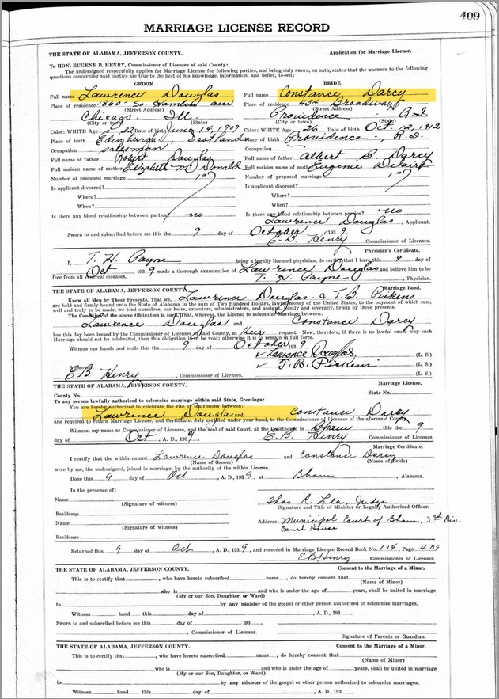

The Names He Carried · Academic Edition
Doug Garceau, comp., “Marriage license record: Lawrence Douglas and Constance Darcy,” DOC-044, The Names He Carried: Academic Edition (https://douggarceau.com/the-names-he-carried/archive/items/doc-044.html : accessed [date]); original: Jefferson County, Alabama, Marriage License Record, book 154, page 409. Via Ancestry.

This copy carries yellow highlighting or red outlining added for the book site. It is not on the original.
Tap an image to open it full size.
Everything as written, including misspellings. [?] marks an uncertain reading. Struck-through words are marked as struck through. Notes in square brackets describe the page and are not part of it.
[Page number] 409 [Printed] MARRIAGE LICENSE RECORD [Printed] THE STATE OF ALABAMA, JEFFERSON COUNTY. Application for Marriage License. [Printed] To HON. EUGENE B. HENRY, Commissioner of Licenses of said County: The undersigned respectfully applies for Marriage License for following parties, and being duly sworn, on oath, states that the answers to the following questions concerning said parties are true to the best of his knowledge, information, and belief, to-wit: GROOM Full name: Lawrence Douglas Place of residence: 1860 So. Hamlin ave (Street Address) Chicago. Ill. (City or town) (State) Color: WHITE Age 32 Date of birth June 14, 1907 Place of birth: Edinburgh, Scotland Occupation: salesman Full name of father: Robert Douglas Full maiden name of mother: Elizabeth McDonald Number of proposed marriage: 1st Is applicant divorced? [a line drawn through] Where? When? Is there any blood relationship between parties? no BRIDE Full name: Constance Darcy Place of residence: 454 Broadway (Street Address) Providence (City or town) R.I. (State) Color: WHITE Age 26 Date of birth Oct. 12, 1912 Place of birth: Providence, R.I. Occupation: [blank] Full name of father: Albert B. Darcy Full maiden name of mother: Eugenie Delaire Number of proposed marriage: 1st Is applicant divorced? [a line drawn through] Where? When? Is there any blood relationship between parties? no [Signed] Lawrence Douglas, Applicant. Sworn to and subscribed before me this the 9 day of October 1939. [Signed] E. B. Henry Commissioner of Licenses. [Printed] Physician's Certificate. I, T. H. Payne being a legally licensed physician, do certify that I have this 9 day of Oct 1939 made a thorough examination of Lawrence Douglas and believe him to be free from all venereal diseases. [Signed] T. H. Payne, Physician. [Printed] THE STATE OF ALABAMA, JEFFERSON COUNTY. Marriage Bond. Know all Men by These Presents, That we, Lawrence Douglas & T.B. Pickens are held and firmly bound unto the State of Alabama in the sum of Two Hundred Dollars, lawful money of the United States, to the payment of which sum, well and truly to be made, we bind ourselves, our heirs, executors, administrators, and assigns, jointly and severally, firmly by these presents. The Condition of the above Obligation is such That, whereas, the License to solemnize Marriage between: Lawrence Douglas and Constance Darcy has this day been issued by the Commissioner of Licenses of said County, at their request. Now, therefore, if there is no lawful cause why such Marriage should not be celebrated, then this obligation is to be void; otherwise it is to remain in full force. Witness our hands and seals this the 9 day of October 1939. [Signed] Lawrence Douglas (L.S.) [Signed] T.B. Pickens (L.S.) [Signed] E.B. Henry, Commissioner of Licenses. [Printed] THE STATE OF ALABAMA, JEFFERSON COUNTY. Marriage License. County No. [blank] State No. [blank] To any person lawfully authorized to solemnize marriage within said State, Greetings: You are hereby authorized to celebrate the rite of matrimony between: Lawrence Douglas and Constance Darcy and required to return Marriage License, and Certificate, duly certified under your hand, to the Commissioner of Licenses of the aforesaid County. Witness, my name as Commissioner of Licenses, and the seal of said Court, at the Courthouse in Bham this the 9 day of Oct, A. D., 1939. [Signed] E. B. Henry Commissioner of Licenses. [Printed] Marriage Certificate. I certify that the within named Lawrence Douglas (Name of Groom) and Constance Darcy (Name of Bride) were by me, the undersigned, joined in marriage, by the authority of the within License. Done this 9 day of Oct, A. D., 1939, at Bham, Alabama. In the presence of: Name [blank] (Signature of witness) Residence [blank] Name [blank] (Signature of witness) Residence [blank] [Signed] Thos. R. Lea, Judge. Signature and Title of Minister or Legally Authorized Officer. Address: Municipal Court of Bham, 3rd Div. Court House Returned this 9 day of Oct, A. D., 1939, and recorded in Marriage License Record Book No. 154, Page 409 [Signed] E B Henry Commissioner of Licenses. [Printed] THE STATE OF ALABAMA, JEFFERSON COUNTY. Consent to the Marriage of a Minor. [form blank] [Printed] THE STATE OF ALABAMA, JEFFERSON COUNTY. Consent to the Marriage of a Minor. [form blank]